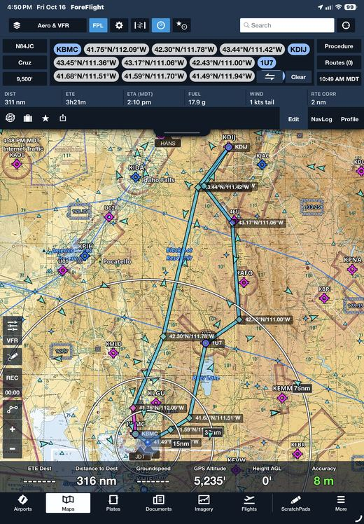
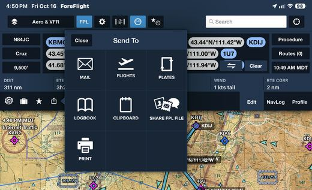
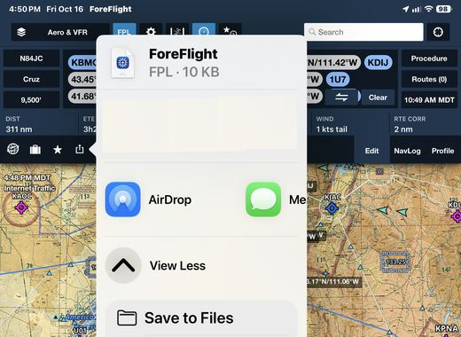
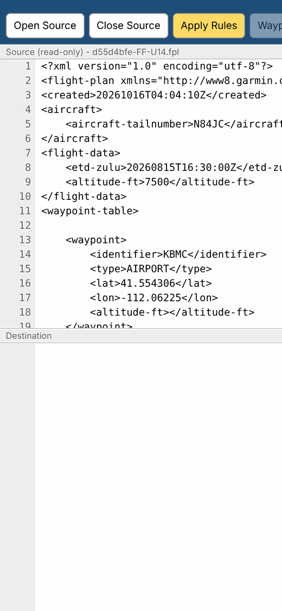
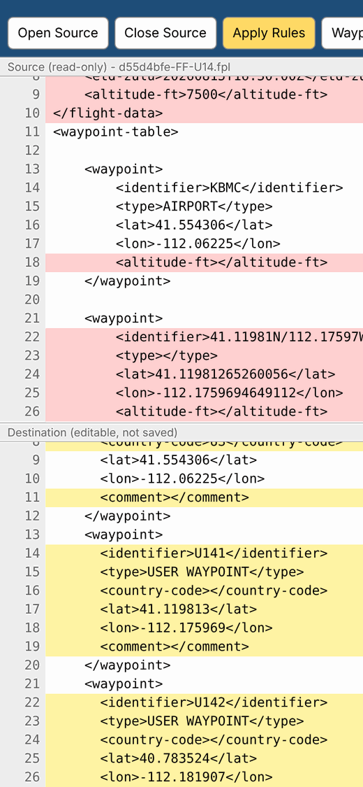
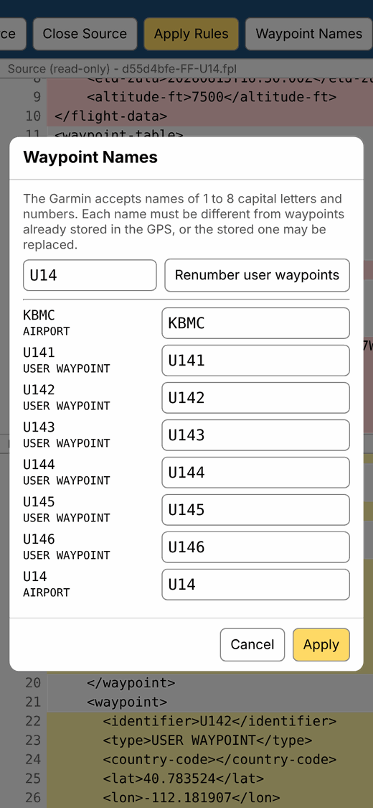
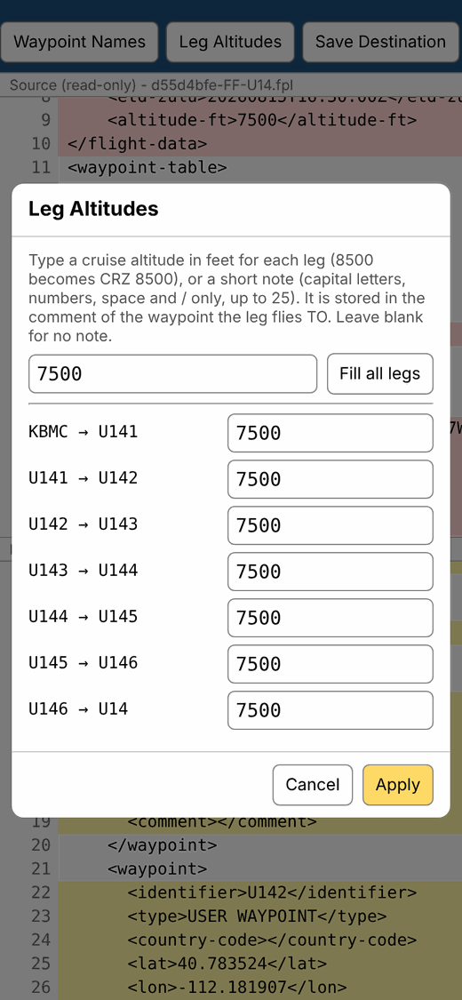
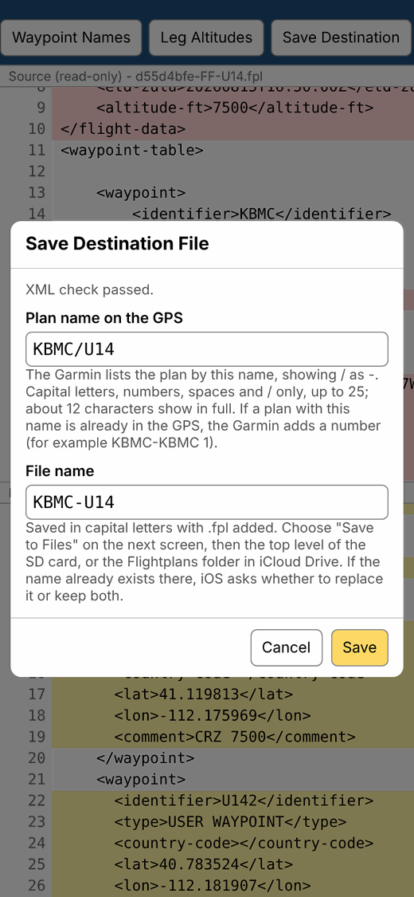
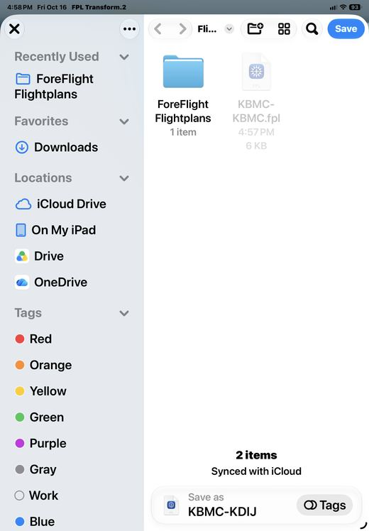
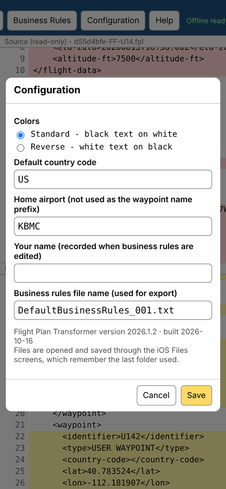

Flight Plan Transformer converts a flight plan exported from ForeFlight into a file the Garmin GPSMAP 696 can import from an SD card. Version .
KBMC-KBMC. Type a clear name such as KDIJ LOOP.Quick steps · Folders · 1 Export · 2 Open · 3 Apply · 4 Names · 5 Altitudes · 6 Save · 7 Garmin · Rules · Configuration · Offline · Troubleshooting
The button bar scrolls left and right. Swipe it to reach the buttons at the end.
Keep the ForeFlight files and the converted files apart. In the Files app, tap Browse → iCloud Drive, then:
Create them in iCloud Drive, not On My iPhone/iPad. Folders on the device can only be seen on that device; iCloud Drive folders appear on all your devices.
| Folder | Holds |
|---|---|
| Flightplans / ForeFlight Flightplans | Files exported from ForeFlight |
| Flightplans | Converted files ready for the Garmin |



Points you tap on the map are named after their coordinates, such as 41.75°N/112.09°W, and ForeFlight cannot rename them. The Garmin cannot use those names, so this app renames them for you (step 4).
Tap Open Source and pick the file you saved. It appears in the top pane, which cannot be changed. The bottom pane stays empty until you apply the rules.

Tap Apply Rules. The converted file appears in the bottom pane.

If a message lists warnings, read them. They name anything the Garmin may not accept.
Map points are renamed to a short prefix plus a number, for example U141, U142. The prefix is the first airport in the route that is not your Home airport, without a leading K.
Tap Waypoint Names to see every name. You can type a new name, or type a prefix and tap Renumber user waypoints. Names must be 1 to 8 capital letters or numbers, and each must be different.

Important: the Garmin keeps every user waypoint it imports. If a name is already stored in the GPS at a different place, the new plan may replace it. Use a different prefix for each plan to the same airport.
The Garmin has no cruise altitude for each leg, so the altitude is stored as a note in the waypoint comment. Tap Leg Altitudes, type an altitude in feet for any leg (8500 becomes CRZ 8500), or tap Fill all legs to use the ForeFlight altitude. The note goes on the waypoint the leg flies to.

.fpl added.KBMC/KBMC. The Garmin shows / as -, so every round trip from home would be called KBMC-KBMC.KDIJ LOOP or DRIGGS. The file name follows it./, up to 25. Keep it to about 12 so it shows in full.KBMC-KBMC 1). Delete the old plan on the Garmin first, or use a new name.
Option A: straight to the SD card. Plug in the SD card reader, choose the SD card under Locations, and save at the top level of the card, not in a folder.
Option B: to iCloud, copy to the card later. Save in iCloud Drive → Flightplans. When you are ready, open the Files app, touch and hold the file, tap Copy, open the SD card, touch and hold an empty spot at the top level, and tap Paste. This keeps a copy on all your devices.

If a file with that name is already there, iOS asks whether to replace it or keep both.
Always check the imported route on the Garmin map before flight.
The rules are the list of conversion steps, one per line. Lines starting with # are notes; put # in front of a rule to switch it off. Tap Business Rules to view or edit them.
Rules stay on this device only. Deleting the app icon erases them, so export a copy first if you changed them.
| Setting | Use |
|---|---|
| Colors | Standard (black on white) or Reverse (white on black) |
| Default country code | Two letters added to airports and fixes. US is normal. |
| Home airport | Never used as the waypoint name prefix. Normally KBMC. |
| Your name | Recorded when you save business rules |
| Rules file name | Name used when you export the rules |
Configuration also shows the version and build date.

| Problem | What to do |
|---|---|
| Some waypoints missing on the Garmin | Open Waypoint Names. Every name must be 1 to 8 capital letters or numbers. |
| Plan imported but empty | Check the warnings after Apply Rules, and that the file was saved at the top level of the card. |
| Folders missing on another device | They were made On My iPhone/iPad. Make them in iCloud Drive instead. |
| Plan shows on the Garmin with a number added (KBMC-KBMC 1) | A plan with that name was already stored. Use a different Plan name on the GPS when saving, or delete the old plan on the Garmin. |
| A stored waypoint moved | Two plans used the same name. Renumber with a different prefix. |
| XML check FAILED | An edit in the bottom pane broke a tag. Tap Apply Rules to start again. |
| App will not open offline | Open it from the home screen icon while online until it shows Offline ready. |
| Rules seem out of date after an update | Business Rules → Reset to default → Save. |
This app helps prepare a file. The pilot is responsible for checking the route before flight.